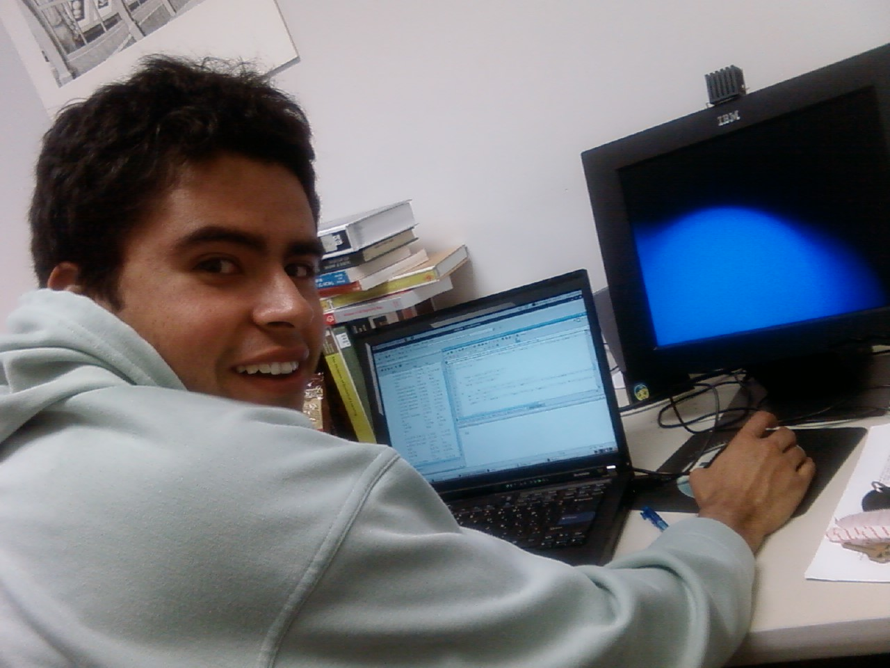

Luis Gonzalo Sánchez Giraldo was born in 1983 in Manizales, Colombia. He received his B.Sc. in electronics engineering and M.Eng. in industrial automation from Universidad Nacional de Colombia in 2005 and 2008, respectively, and his Ph.D. In electrical and computer engineering from the University of Florida in 2012. Between 2004 and 2008, he was appointed as a research assistant in the Control and Digital Signal Processing Group (GCPDS) at Universidad Nacional de Colombia. During his Ph.D. studies he worked as a research assistant at the Computational Neuro-Engineering Laboratory (CNEL) at University of Florida. He is currently a postdoctoral researher in the Computer Science department at the University of Miami. His main research interests are in machine learning, signal processing, and computational neuroscience.
For a PDF version of my CV click here